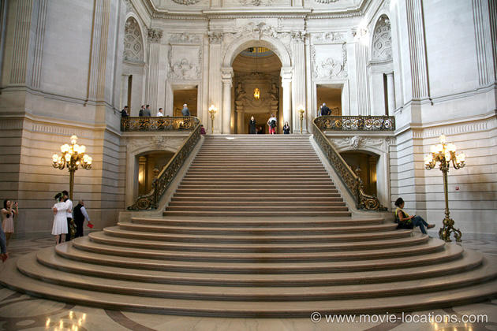

Raiders Of The Lost Ark
Main Content
Steven Spielberg hit all the right notes with his homage to Saturday morning features. The film was based in the UK, which is why the studio sets, including Marion’s Raven Bar, the Peruvian temple and the Well of Souls, were built at the famous Elstree Studios in Hertfordshire.
The opening set-up of Indiana Jones (Harrison Ford) in the ‘Peruvian’ jungle was filmed on the island of Kauai, one of the islands of Hawaii, to which the director would return for Jurassic Park.
The ‘temple’ location is on the Huleia River, on the Kipu Ranch, south from Kaumualii Highway on the east coast, just south of Lihue, the island’s main town. Kipu is a working cattle ranch, not generally open to the public, but you can take a tour with Kipu Ranch Adventures which takes in the filming locations.
Kauai is the fourth largest, and one of the most northern, of the Hawaiian islands, but perhaps the most beautiful, a volcanic outcropping of sharp peaks and steep-sided valleys, cloaked in lush vegetation, which has earned it the well-earned name of The Garden Isle. Kauai’s luxuriant greenery is also seen in South Pacific, Donovan’s Reef, the 1976 version of King Kong, Tropic Thunder and Pirates Of The Caribbean: On Stranger Tides.
The Gothic exterior of ‘Marshall College’, where Indy teaches, is the 1927 Conservatory of Music building of the University of the Pacific, 3601 Pacific Circle, Stockton, California – seen again in Indiana Jones And The Kingdom Of The Crystal Skull.
The classroom, from which Indy is summoned by Marcus Brody (Denholm Elliott), is much closer to the studio. It’s Rickmansworth Masonic School, Chorleywood Road (A404) just a couple of minutes north of Rickmansworth Station (seen in Indiana Jones and the Last Crusade – though this time it was supposed to be ‘Barnett College’. Confusing).
He meets with the Army Intelligence guys in the school’s Great Hall, where he’s informed of the German archaeological dig at ‘Tanis’. The same hall was more recently featured in Richard Linklater’s Me and Orson Welles, with Zak Efron.
Picking up old flame Marion Ravenwood (Karen Allen), Indy is soon heading off to Egypt. The production, though, substitutes Tunisia, which would have been familiar to producer George Lucas from the filming of Star Wars.
1930s ‘Cairo’ is the holy city of Kairouan, in northern Tunisia. About 35 miles west of the coastal resort of Sousse, Kairouan is the fourth holiest city in Islam, home to the Great Mosque of Sidi-Uqba.
Most of the scenes are filmed in the city’s Medina, around the Avenue 5 Novembre, the main tourist drag. It’s a little to the east, on Place Zarrouk near the Mosque of the Three Gates, that Indy famously shoots the impressive swordsman. In fact, there was supposed to have been an elaborate fight, but when Ford was stricken by a tummy bug, the scene was shortened, serendipitously giving the movie its biggest laugh.
Believing Marion killed in the truck explosion, Indy drowns his sorrows in the ‘Marhala Bar’ – now a carpet shop at the southern end of Avenue 7 Novembre, near the gate, Bab ech Chouhada.
Kairouan is famous for its carpets. Organised tours generally include a carpet showroom in the itinerary, and you’ll be lucky to leave the city without having bought one.
The ‘Tanis’ dig site was an enormous set built on location near Tozeur, east toward the Algerian border. The vast dry salt lake of Chott El Jerid, and the area around the oasis town of Nefta (pretty much the area used by George Lucas for The Phantom Menace and Attack Of The Clones) stand in for the ‘Egyptian’ desert.
Indy naturally finds the Ark, though it’s soon in the hands of the Nazis and shipped off to an island in the Mediterranean, ‘north of Crete’.
The dock at which it’s unloaded is an ex-German base at La Rochelle, on the west coast of France (the same submarine base seen in Wolfgang Petersen’s Das Boot). The U Boat pens are situated in the town’s commercial port, known as La Pallice (I believe they’re not open to the public).
The rocky passage through which the Ark is transported for the opening ritual Is back in Tunisia. It’s Sidi Bouhlel (known as Star Wars Canyon since several scenes for the original Star Wars were filmed here), a few miles northeast of Tozeur on the edge of the Chott.
The climactic opening of the Ark was filmed on a soundstage back at Elstree Studios, and then it’s back in the USA, as Indy and Marion are fobbed off by government suits and the Ark is spirited away.
The brief establishing shot of Washington D.C. is borrowed from another film, and the government office is, once again, Rickmansworth Masonic School in Hertfordshire.

Indie and Marion are left to plod down the steps of the grandiose lobby of San Francisco City Hall, Polk Street between McAllister and Grove Streets, which might be already familiar to you from Dirty Harry.
Visit Info
Visit The Film Locations
Tunisia
Visit: Tunisia
Visit: Kairouan
Hawaii
Visit: Hawaii
Visit: Kauai
Flights: Lihue Airport, 3901 Mokulele Loop, Lihue, HI 96766 (tel: 808.274.3800)
Visit: Kipu Ranch Adventures, Lihue HI 96766 (tel: 808.246.9288)
California
Visit: California
Visit: Stockton
California | San Francisco
Visit: San Francisco
Flights: San Francisco International Airport, San Francisco, CA 94128 (tel: 650.821.8211)
Travel around: BART (Bay Area Rapid Transit)
Visit: San Francisco City Hall
UK | Hertfordshire
Visit: Hertfordshire
France
Visit: France